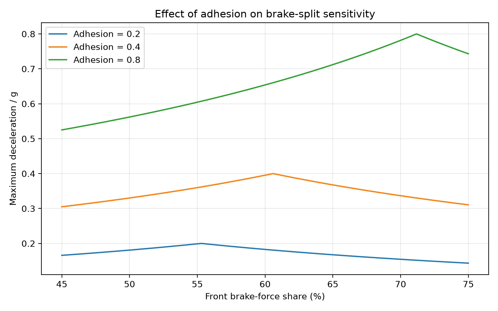
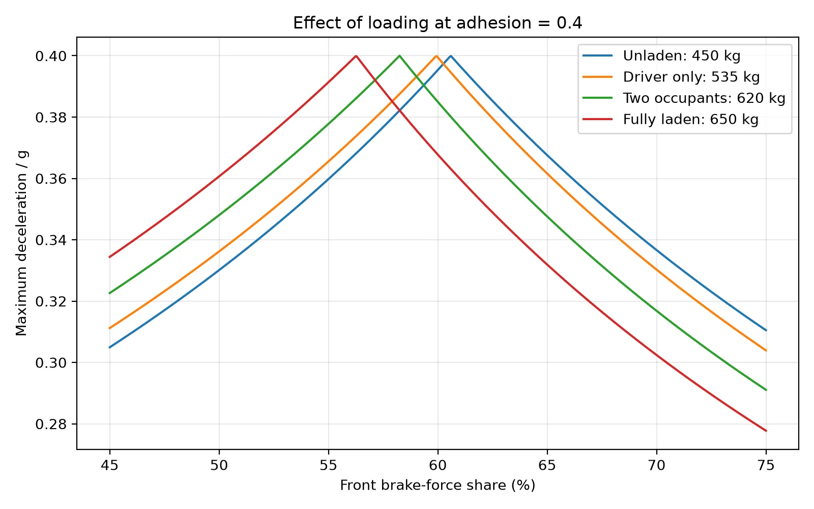

Personal project · Python and FreeCAD · September 2026 – present
Quadricycle Brake Balance Model
The first design question in my quadricycle vehicle model: where should the brake balance sit, and what does payload do to it?
- 55–71%Ideal front brake share across road grip of 0.2 to 0.8, unladen
- 0.02Percentage points between the brake-split sweep and the theoretical optimum
- 92% → 83%Usable grip with a fixed 65% front split, unladen to fully laden
- 86.7 → 96.0 mStop from 90 km/h at μ = 0.4 as the car is loaded
The project
A self-directed digital design of a two-seat quadricycle, 650 kg laden, using free tools: Python for the vehicle model and FreeCAD for the layout. The aim is a driver-in-the-loop simulator on real public roads that predicts ride, handling and powertrain behaviour. So far the model covers coast-down, braking and acceleration. The first design question was brake balance. Started September 2026, separate from the Cranfield group project.
Ideal brake balance
Both axles reach their grip limit together when the front share of brake force equals the static front weight fraction plus the load transferred forward under braking:
βideal = Wf/W + μh/L
Here Wf/W is the static front weight fraction, μ the tyre–road grip, h the centre-of-gravity height and L the wheelbase (1.70 m). The ideal split rises with grip, so a fixed split can only be ideal on one surface.

Effect of payload
Each added load moves the centre of gravity rearward and upward. With the brake split fixed at 65% front on a 0.4-grip road, the front axle reaches its limit first in every case:
| Load case | Mass | CoG height | Static front | Ideal front share | Deceleration | Usable grip | Stop from 90 km/h |
|---|---|---|---|---|---|---|---|
| Unladen | 450 kg | 0.450 m | 50.0% | 60.6% | 0.368 g | 92% | 86.7 m |
| Driver only | 535 kg | 0.521 m | 47.7% | 59.9% | 0.362 g | 90% | 88.1 m |
| Two occupants | 620 kg | 0.573 m | 44.8% | 58.3% | 0.348 g | 87% | 91.7 m |
| Fully laden | 650 kg | 0.583 m | 42.6% | 56.3% | 0.332 g | 83% | 96.0 m |

With ideal balance the car could use all the grip and stop in about 80 m. The fixed 65% split adds about 7 m to that unladen and 16 m fully laden.
How I checked it
- Against theory: a sweep of brake split found the optimum within 0.02 percentage points of the formula at μ = 0.2, 0.4 and 0.8.
- Against a hand calculation: the simulated grip-limited stop from 90 km/h matched the hand-calculated stopping distance.
- Against time step: with brake pressure ramping up, the stop was within 0.031 m of the analytical answer at a 0.0025 s step, and the error halved each time the step was halved.
Tools: Python, FreeCAD
← All projects